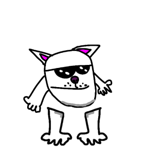

"They made Undertale on GameMaker, and I'm making the Divijay Engine. No need to doubt this engine!"
Welcome to the v0.2 Divijay Engine update! This is not just a patch, but a big step forward. I decided not to stand still and added a bunch of new content, as well as worked on the bugs (and the madness).
I have added 12 new background menu options for every taste! Now the main menu looks even crazier and more memic.
In the Extra section, you can now find the Boyfriend! Check out his animations and see how he looks in our engine.
The engine now officially supports 18 keys (18K)!
Please note: This is an experimental feature, and playing on 18 keys may require a physical keyboard with a lot of buttons (or a lot of fingers).
I'm being honest with you. In this version, I decided to abandon some ideas to make the engine work more stable:
Divijay Engine is like Linux. I made the core, and the rest is up to your imagination. Do you want 100K keys? Do you want Baldi? Do you want the game to close itself after 7 seconds? Don't limit yourself to the limits!
Created with a love for memes and rhythm games.
Guguverse Studios.
If you like the engine, put a star ⭐ on GitHub!
HOORAY! 🐱💚🕶️